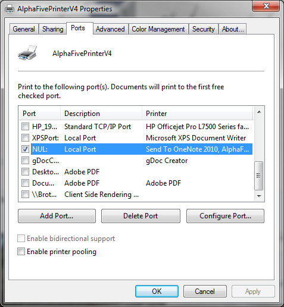

Printer not activated, error code -20 (or -30)
The error message is probably telling you that somehow the Amyuni Printer Driver (called AlphaFivePrinterV4 in the Printers folder in Alpha Five Version 10, and AlphaFivePrinterV4p5 in Version 11 as of Build 2235) is not properly installed.The nearly sure-fire way to fix this for AlphaFivePrinterV4 is:
- Go to the printers folder and delete 'AlphaFivePrinterV4'
- Temporarily turn off UAC on your machine.
- Re-install A5
- That should reinstall the AlphaFivePrinterV4
- Do you see AlphaFivePrinterV4 in your Printers folder?
- Try PDF printing again
- Re-enable UAC
Minimal fix
If you are trying to print a report to a PDF file in the correct way (using the Print Genie, for example) and you get Error -20, then a minimal fix that usually works is simply:- Go to the printers folder and delete 'AlphaFivePrinterV4'
- Try PDF printing again
Quicken
There is one special case where the above procedures may fail: if you have both Quicken and Alpha Five installed. In this situation, delete the Quicken PDF Printer as well as AlphaFivePrinterV4, and delete the entire contents of the Alpha Five amyuniv4 folder and the Quicken PDFDrv folder. Then reinstall Alpha Five and continue as above.Running Alpha Five as a service?
If you are running Alpha Five as a service, you might be keeping PDF printing from working by running the service under an account that does not have sufficient permission. You can troubleshoot this by stopping the service and running Alpha Five as a normal process from an account with administrator permission.This is true no matter how you are running Alpha Five as a service, including running it under Always Up.
Fixing stubborn cases
- The AlphaFivePrinterV4 device must be assigned to a port, which should be NUL: rather than any other port


 TipOn Windows Server 2008, the AlphaFivePrinterV4 device is often assigned to LPT1:. That will cause problems, however, particularly "hanging" when printing. Assign AlphaFivePrinterV4 to NUL: manually to fix the problem.
TipOn Windows Server 2008, the AlphaFivePrinterV4 device is often assigned to LPT1:. That will cause problems, however, particularly "hanging" when printing. Assign AlphaFivePrinterV4 to NUL: manually to fix the problem.
The AlphaFivePrinterV4p5 device will normally install to NUL: properly on its own.
- You can open a CMD shell in the Alpha Five program folder (for example C:\Program Files (x86)\a5V11) and execute the InstallAmyuniPrinters.exe program there to see if the installer gives an error message. The error message might be helpful.
Running InstallAmyuniPrinter.exe in this stand-alone context is not a replacement for running the Alpha Five installer because when you run it stand-alone like this, you are not entering the necessary license codes. It is only useful to see if there are any helpful error messages. You should probably uninstall this after capturing the error messages. - You should enable error logging on your server to help diagnose the problem if you still have it at this point.
- In extremis, you should go to the Amyuni web site, http://www.amyuni.com/
") , download a trial version of the PDF Suite and try to install that and see if you can print to the trial printer from notepad. If the trial printer installs and works, then AlphaFivePrinterV4 should also install work. Most likely the trial version will not install and work. Then you can see what error message it generates, and ask Amyuni for support directly.
, download a trial version of the PDF Suite and try to install that and see if you can print to the trial printer from notepad. If the trial printer installs and works, then AlphaFivePrinterV4 should also install work. Most likely the trial version will not install and work. Then you can see what error message it generates, and ask Amyuni for support directly.
Please let us know what did and did not work for you, so that we can help others.